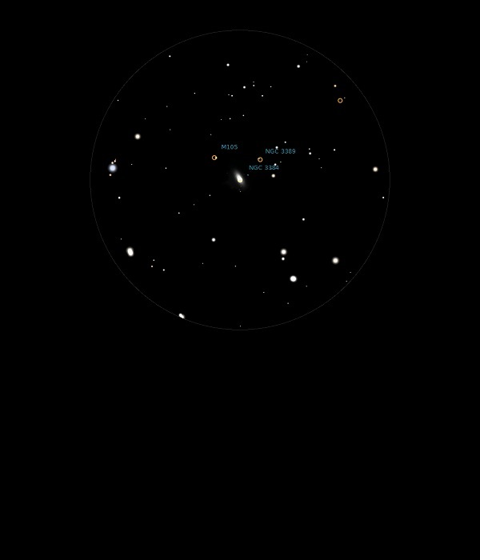

NGC 3384
Elliptical Galaxy in Leo
NGC 3384
Mag 10.9
02/04/13
06/04/13
In same
FOV in 12mm, 18mm and 25mm as M105 and NGC3389
20/04/15
Sits in the same nice 12mm FOV as M105 and NGC 3389 with a
nice asterism of Mags 10 and 11 stars to compliment it
31/03/16
Hunting more galaxies in Leo since it is perfectly placed on a
nice dark night
M105 bright, tight and just a ball in 12mm, in same FOV as NGC
3384, slightly fainter and smaller, and NGC 3389, very faint and
located with inverted vision